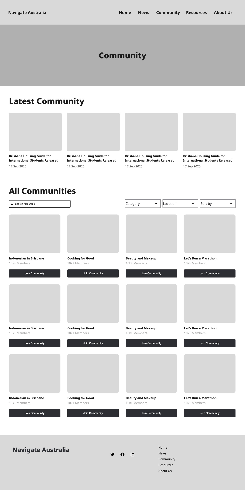
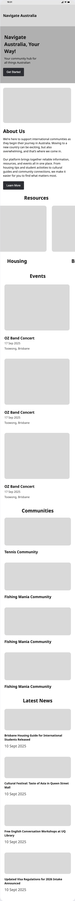
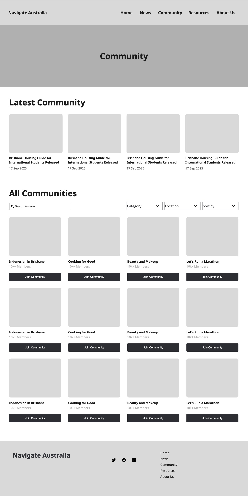
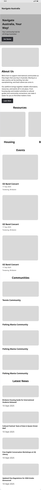
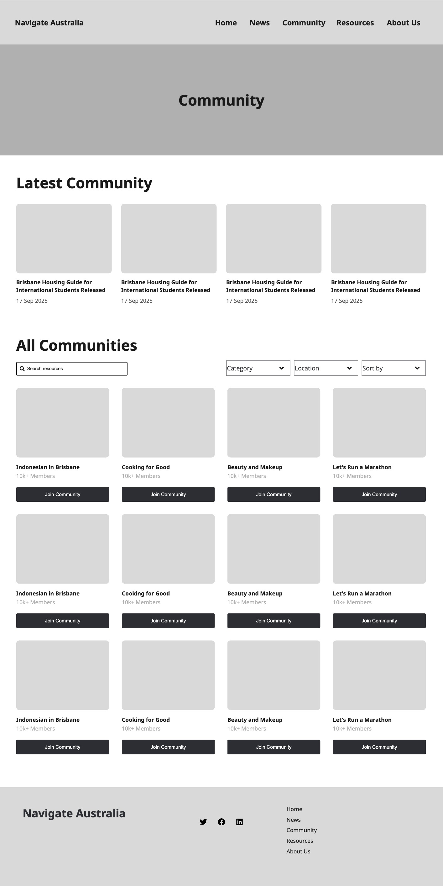
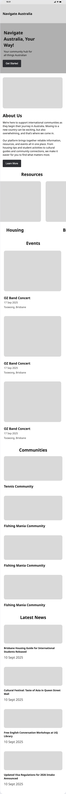
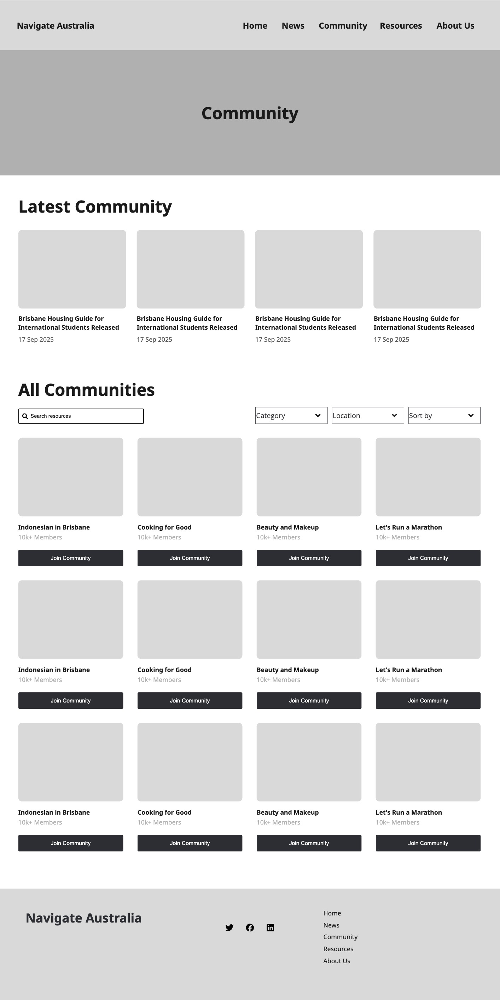
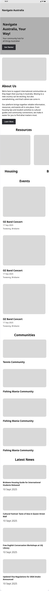

Page Layouts
 







Primary — #006A71
Secondary — #48A6A7
Accent — #FF6363
Warning — #F4991A
Text — #333333
Text — #888888
Font Family: Manrope, sans-serif
Font Size: 4rem (64px)
Color: var(--color-primary)
Font Family: Manrope, sans-serif
Font Size: 3rem (48px)
Font Family: Manrope, sans-serif
Font Size: 1.5rem (24px)
Font Family: Manrope, sans-serif
Font Size: 1rem (16px)
Font Weight: bold
Font Family: Manrope, sans-serif
Font Size: 0.75rem (12px)
Font Weight: bold
Paragraph example
Font Family: Manrope, sans-serif
Font Size: 1rem (16px)
Welcome to Adine's Work Phase 3!